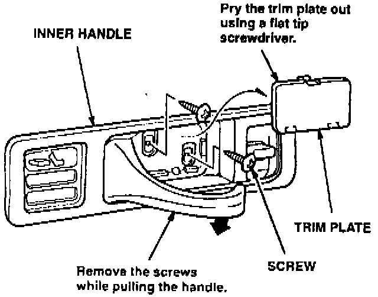
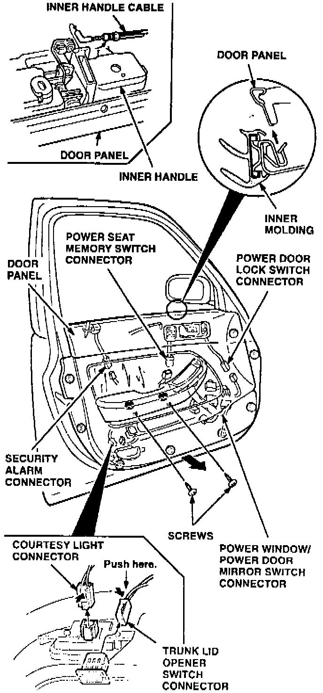
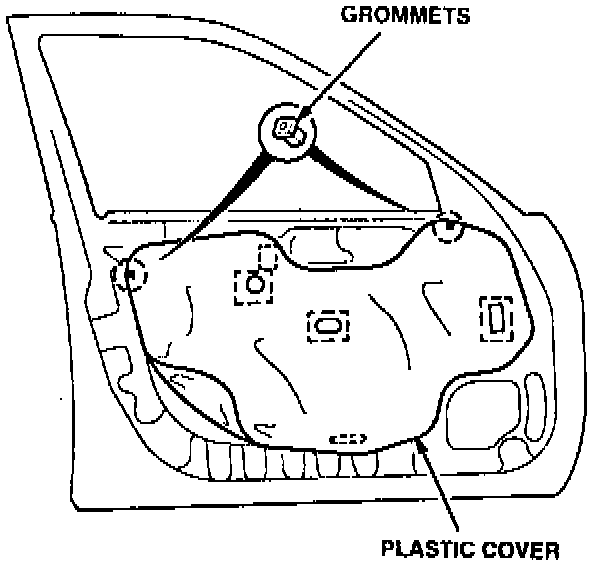
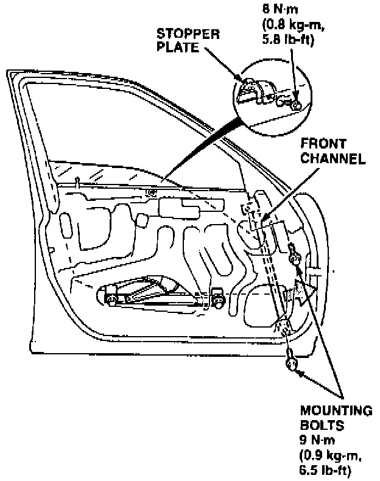
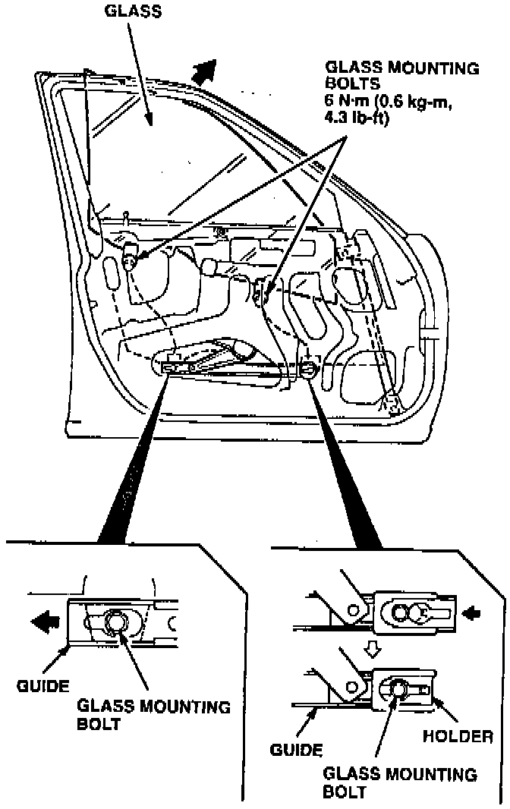
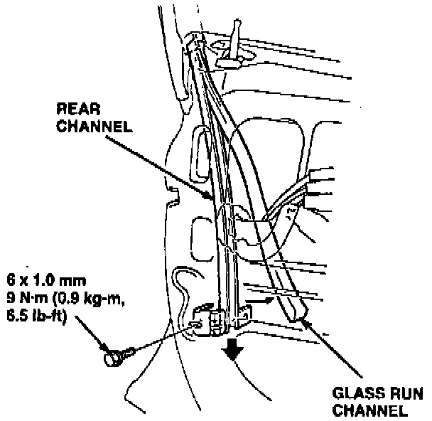
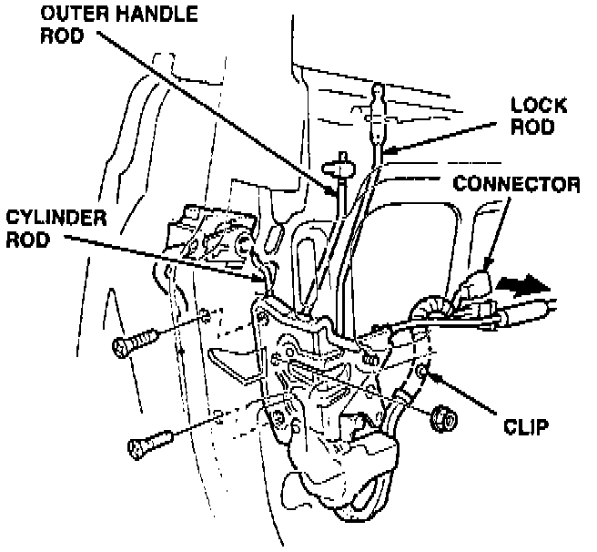
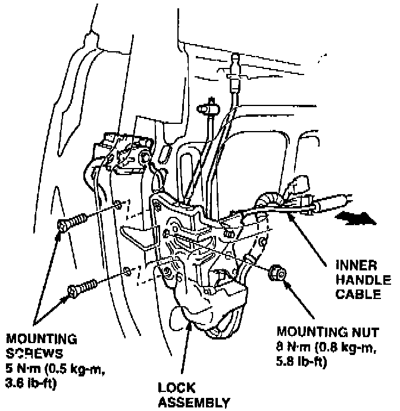
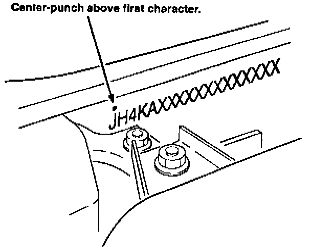
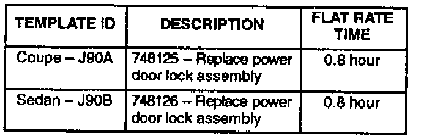

Campaign - Security System Deactivation
February 7, 1995YEAR
1994
MODEL
LEGEND
VIN APPLICATION
See VEHICLES
AFFECTED
BULLETIN NO.
95-002
Product Update: Legend Security System
BACKGROUND
On some occasions, unlocking the driver's door with the key will not deactivate the security system. The alarm then sounds when the door unlocks.
VEHICLES AFFECTED
4-door: From VIN JH4KA7.. .RC001666 thru RC016172
Coupe: From VIN JH4KA8.. .RC000012 thru RC001780
CUSTOMER NOTIFICATION
Owners of affected vehicles will be contacted by mail and asked to take the car to a dealership for updating. The text of the customer letter is at the end of this service bulletin.
CORRECTIVE ACTION
Replace the door lock assembly in the driver's door.
Inner Door Handle:

1. Remove the trim plate and screws from the inner door handle.
Door Panel:

2. Remove the door panel.
Plastic Cover:

3. Use a trim pad remover and a razor blade to remove the plastic cover.
4. Remove the inner molding.

5. 4-door only: Remove the stopper plate. Remove the mounting bolts, then slide the front channel forward.

6. Lower the window until you can see the glass mounting bolts. Loosen the bolts, slide the guide to the rear, and pull the glass out through the opening.

7. Remove the glass run channel from the rear channel. Remove the mounting bolt, then remove the rear channel.
Lock Assembly:

8. Use a small flat tip screwdriver to pry the outer handle rod and cylinder rod out of their joints. Disconnect the electrical connectors for the lock assembly. Release the clip holding the wiring harness to the door.
Lock Assembly:

9. Remove the two mounting screws and the mounting nut. Remove the lock assembly from the door.
10. Install the new lock assembly in the door. Adjust the length of the outer handle rod and reinstall it. Reinstall the cylinder rod, connect the electrical connectors, and clip the harness to the door.
11. Reinstall all removed parts.

12. Center-punch a completion mark above the first character of the engine compartment VIN.
PARTS INFORMATION
Power door lock assembly, 4-door: P/N 72150-SP0-A01
Power door lock assembly, Coupe: P/N 72150-SP1-A01

WARRANTY CLAIM INFORMATION
Operation number: 748125 - Coupe
748126 - 4-door
Flat rate time: 0.8 hour
Failed P/N: 72150-SP0-A01
Defect code: 637
Contention code: J90
Example of Customer Letter
February 1995
Product Update: Legend Security System
Dear Legend Owner:
We are writing to notify you of a potential problem with your Legend.
What is the problem?
Normally, the security system is deactivated when the key is used to unlock the driver's door. However, an electrical switch in the driver's door lock mechanism may occasionally malfunction, causing the security system to remain on. As a result, the alarm sounds when the door unlocks. Turning the key to unlock a second time normally causes the electrical switch to make contact and cancel the alarm.
What should you do?
Call your local Acura dealer and make an appointment to have your car updated. They will install an improved driver's door lock mechanism. Parts are now available. This work will be done free of charge. You should have your car updated even if you have never experienced this problem.
What to do if our information is incorrect.
This notice was mailed to you according to the most current information we have available. If you no longer own a Legend, or the name and address information in this notice is incorrect, please fill out and return the enclosed Information Change Card. This will help us to update our records.
If you have questions.
If you are not sure how to contact an Acura dealer. or have questions about this notice, please call or write to:
Acura Customer Relations Department
1919 Torrance Boulevard
Torrance, CA 90501-2746
(800) 382-2238
We apologize for any inconvenience this product update may cause you; however, our main concern is the continued trouble-free enjoyment of your Acura Legend.